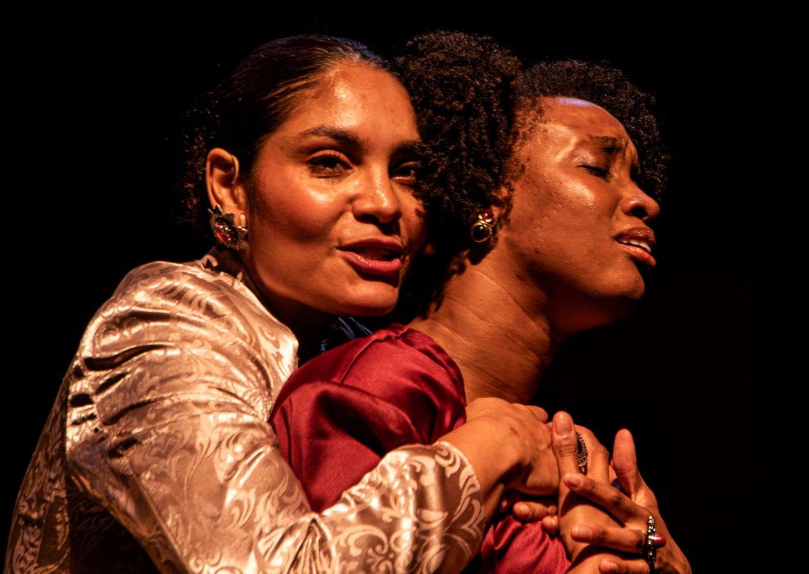

Ruth & Léa estreia no Sesc Pompeia com Bárbara Reis e Ivy Souza

Dirigida por Luiz Antonio Pilar e escrita por Dione Carlos, a montagem celebra duas artistas negras que transformaram a história do teatro e da televisão brasileira
Após temporadas emocionantes no Rio de Janeiro e em Belo Horizonte, o espetáculo Ruth & Léa chega a São Paulo para uma curta e imperdível temporada no Sesc Pompeia, até 30 de novembro de 2025. Com direção e idealização de Luiz Antonio Pilar, dramaturgia da premiada Dione Carlos e atuação de Bárbara Reis e Ivy Souza, a peça é uma homenagem poética e sensível às trajetórias de Ruth de Souza e Léa Garcia — duas artistas fundamentais na construção da cultura negra brasileira.
As apresentações acontecem de quarta a sexta, às 20h, e aos sábados e domingos, às 18h, com sessões extras nos dias 21 e 28 de novembro, às 16h.
Duas pioneiras, um legado
A montagem nasceu de um gesto de afeto e reconhecimento. Quando Ruth de Souza faleceu, em 2019, aos 98 anos, o diretor Luiz Antonio Pilar — indicado ao Emmy Internacional por Sinhá Moça e vencedor do Prêmio Shell por Leci Brandão, na Palma da Mão — sentiu que devia uma homenagem à artista. Com a partida de Léa Garcia, em 2023, o sentimento se tornou ainda mais urgente: “Quis celebrar essas duas mulheres em vida, e agora celebro em arte. Elas abriram as portas do possível para todas as que vieram depois”, explica Pilar.
No palco, o espetáculo recria a força e a delicadeza de suas jornadas, costurando lembranças, canções e depoimentos em uma narrativa que mescla teatro, música e cinema. A dramaturgia de Dione Carlos — vencedora do Prêmio Shell de Dramaturgia — amplia o tributo e inclui referências a outros nomes essenciais da arte negra no Brasil, como Abdias do Nascimento, Aguinaldo Camargo e Mercedes Baptista, primeira bailarina negra do Teatro Municipal do Rio de Janeiro.
Entre o palco e o estúdio: um tributo em forma de ensaio
A encenação se passa em um estúdio de cinema, concebido pela cenógrafa Lorena Lima. Ali, duas atrizes — Zezé e Elisa, em homenagem a Zezé Motta e Elisa Lucinda — se preparam para ensaiar um filme musical sobre Ruth e Léa. Enquanto afinam falas, memórias e canções, suas histórias pessoais se entrelaçam às das homenageadas, criando uma teia de afetos e reflexão sobre o legado da arte negra.
A trilha é executada ao vivo pela pianista Gláucia Negreiros, com direção musical de Wladimir Pinheiro. Os figurinos de Rute Alves, inspirados na estética do artista Emanoel Araújo, dialogam com a iluminação de Rodrigo Palmieri e Luiz Antonio Pilar, compondo uma atmosfera íntima e poética.
“Falamos sobre duas mulheres que desafiaram o tempo e os limites impostos pela sociedade. A mensagem principal é: nada se constrói sozinho”, afirma Bárbara Reis, que retorna ao teatro após sete anos, celebrada por seu trabalho em Todas as Flores.
“Ruth e Léa são minhas ancestrais artísticas. Com tão poucas oportunidades, fizeram tanto. Esse trabalho me faz pensar que futuro podemos plantar agora”, completa Ivy Souza, que conheceu Léa Garcia pessoalmente em 2019.
Arte, memória e continuidade
Mais do que uma homenagem, Ruth & Léa é uma celebração da permanência. Com delicadeza e vigor, a peça costura passado e presente, ressaltando a importância das mulheres negras que abriram caminhos nas artes e a necessidade de seguir cultivando essas vozes. É também um reencontro entre gerações de artistas pretas, unidas por afeto, legado e ancestralidade.
Ficha técnica
Idealização, direção artística e direção de produção: Luiz Antonio Pilar
Assistência de direção e produção local: Mozart Jardim
Direção musical: Wladimir Pinheiro
Dramaturgia: Dione Carlos
Produção executiva: Beatriz Dubiella
Elenco: Bárbara Reis e Ivy Souza
Cenografia: Lorena Lima
Figurino: Rute Alves
Designer de som: Vilson Almeida
Direção de movimento: Tatyane Amparo
Iluminação: Rodrigo Palmieri e Luiz Antonio Pilar
Interpretação musical: Gláucia Negreiros e Anette Camargo
Preparação vocal: Pedro Lima
Contrarregra: Sandro Carvalho
Operação de câmera e microfone: Feliphe Affonso
Operação de som e multimídia: Danuza Formentini
Camareira: Érika dos Santos
Realização: Lapilar Produções Artísticas Ltda.
Sinopse
Duas atrizes, Zezé e Elisa, se preparam para ensaiar um filme musical sobre Ruth de Souza e Léa Garcia, ícones da cultura negra brasileira. Entre lembranças, reflexões e afetos, o espetáculo convida o público a uma viagem sensorial pela memória, pelo tempo e pela força das artistas que transformaram o teatro e a televisão no país.
Serviço
Espetáculo: Ruth & Léa
📅 Temporada: até 30 de novembro de 2025 (16 apresentações)
🕗 Horários: Quarta a sexta, às 20h; sábados e domingos, às 18h Sessões extras: 21 e 28 de novembro, às 16h
📍 Local: Sesc Pompeia – Rua Clélia, 93, Água Branca, São Paulo
🎟️ Ingressos: R$ 50 (inteira), R$ 25 (meia), R$ 15 (credencial plena) Vendas: sescsp.org.br
⏱️ Duração: 90 minutos
🔞 Classificação: 12 anos
♿ Acessibilidade: Espaço acessível a cadeirantes e pessoas com mobilidade reduzida. Todas as sessões contam com Tradução em Libras e Audiodescrição.